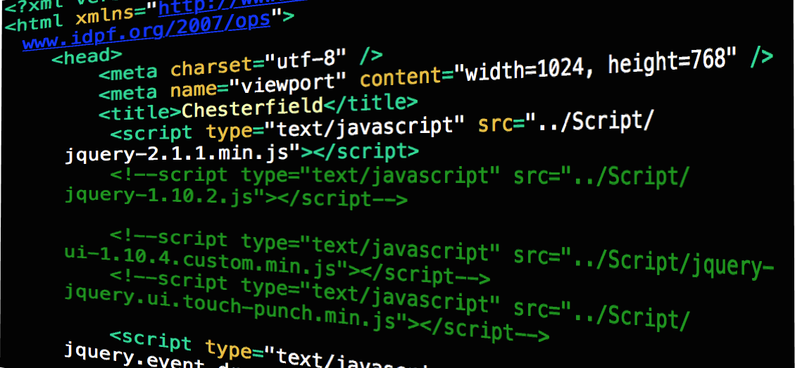

Sobre el Blog

Hola soy Daniel Alejandro Baez Romero, estudiante de la carrera Ingenieria en Computacion en la Universidad de Guadalajara.
Me considero un aficionado a la tecnologia y con buen nivel de interes en la programacion, ademas de un curioso por el funcionamiento de las cosas.
Actualmente (2021-B) estoy cursando la materia Programacion para Internet y el objetivo de este sencillo blog es llevar a la practica los conocimientos adquiridos y recopilar todos los trabajos realizados durante el curso de la misma.
Espero que tu paso por aqui sea agradable y disfrutes ver un poco de mi trabajo.